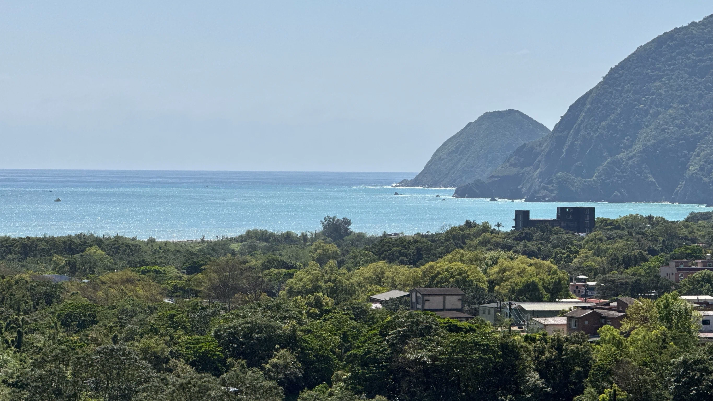

共創山海間的款待藝術
從房地產開發到生活策展的跨界實踐 征泰事業自 2004 年深耕宜蘭房地產開發，憑藉對土地的敏銳直覺，於 2022 年夏季正式創立旅宿品牌「游山 ABURA」。
我們致力於打破建築、休閒與餐飲的邊界，開發更具生命力的房地產項目，構築全方位的戶外生活提案。
我們尋找具備細膩心靈與專業韌性的夥伴。在這裡，工作不只是任務的達成，而是一場關於美學、自然與人際連結的集體創作。讓我們一同在冬山的稻浪、南澳的山谷與東澳的海灣間，共創嚮往的生活。
員工福利

商業合作
我們尋求與品牌精神高度契合的合作夥伴，展開深度對話。透過沉浸式的空間體驗，將品牌意志與「游山」的設計語彙融合。支持高品質形象大片拍攝、深度訪談取景或限定聯名計畫，讓空間成為品牌敘事的延伸。
將「游山」的公共空間轉化為品牌的實驗劇場。無論是精品快閃店（Pop-up Store）、藝術裝置植入、或私密鑑賞會，我們協助夥伴打破傳統框架，在自然的脈絡中進行場域策展。相關活動均遵循專業場域管理與規範，確保品牌呈現的精準度。
提供專業的動線規劃，承接高端私人聚會、品牌發表會或戶外婚禮。我們重視活動品質與自然環境的平衡，確保每一場盛事都能在不干擾場域和諧的前提下完美呈現。所有專案執行均受相關法律保障，並維護場域與參與者的隱私權益。
合作申請

品牌孵化
在山海邊，沖一杯感官降落的咖啡
我們正在尋找能定義「山海午后」的咖啡品牌。在碧候的煙雨山谷，或東澳的碧藍海灣，我們提供具備美學底蘊的空間，邀請您一同孵化獨特的咖啡場景。
· 合作願景
– 結合在地食材（如南澳段木香菇、東澳海鹽）開發限定風味。
· 空間特色
– 具備大面採光與自然景觀，讓品味咖啡成為一場與自然的對話。
· 我們歡迎
– 對咖啡豆有極致追求、擅長營造空間氛圍的品牌或職人入駐。
以山水為湯，暖人心脾的部落款待
位於碧候溫泉旁的鍋物空間，我們期許這不僅是一頓餐點，更是一場關於「溫度」的體驗。
· 合作願景
– 利用南澳純淨水源與泰雅部落農產，打造具備原民色彩的高端鍋物。
· 空間特色
– 沈穩的木質調設計，與窗外蔥鬱山林相映成趣。
· 我們歡迎
– 堅持原型食物、擅長敘事烹飪技術，並認同永續農法理念的餐飲夥伴。
從日出到星辰，匯聚海灣日常的味覺地圖
東澳的全日餐廳，承載著旅人對太平洋的嚮往。從清晨的陽光早餐到深夜的靈魂料理，我們需要一個能駕馭全時段需求的創意團隊。
· 合作願景
– 開發融合東海岸海鮮與西式烹調美學的創意料理。
· 空間特色
– 半開放式廚房與開闊海景視野，強調食材從產地到餐桌的透明感。
· 我們歡迎
– 具備多元餐飲管理經驗，能將在地風土轉化為國際化味覺語言的經營者。
山盟海誓，共譜一場關於遺世獨立的慶典
這是一個能容納集體回憶的場域。無論是山海婚禮、私人契聚，還是高端企業論壇，我們致力於打破傳統宴會框架。
· 合作願景
– 提供客製化策展服務，結合場域優勢打造「目的地婚禮」品牌。
· 空間特色
– 無柱化設計，擁有極佳的音場與自然採光，直通海景戶外露台。
· 我們歡迎
– 精品外燴團隊、活動策展品牌，或擁有豐富宴會經營背景的合作夥伴。

品牌部
1、薪資
– NT$ 50,000起 + 專案達成獎金。
2、核心價值
– 核心決策層，強調美學定錨與異業開發能力。確保「東澳的壯闊」與「碧候的溫度」在同一個美學水平上。
3、核心職能
– 統籌雙境（東澳/碧候）視覺 DNA 定義以及維持集團各事業項目行銷方向定位一致性、開發異業精品聯名（高端車友會、室內香氛）、主導公關敘事控管與「感官降落」驚喜服務劇本開發...等有關品牌的大小事宜。
4、主要工作項目
– 視覺與調性定錨：定義並監管集團旗下各場域（東澳、碧候、冬山）的視覺 DNA，確保從線上官網、社群視覺到線下實體備品、空間佈置，皆維持一致的高端美學水平。
– 跨界精品聯名開發：主動開發與品牌形象相契合之異業合作（如：跑車俱樂部年度會師、高訂室內香氛開發、高端戶外裝備品牌聯名），拓展品牌在品味階層的影響力。
– 公關敘事與危機控管：撰寫並主導集團對外之媒體新聞稿與品牌故事，負責媒體關係維護，並在品牌聲譽管理上展現專業韌性。
– 「感官降落」體驗設計：策劃並編寫旅客抵達後的「驚喜服務劇本」（Surprise Service Script），優化五感體驗流程（聽覺音樂、嗅覺香氛、觸覺細節），提升顧客忠誠度。
– 市場定位與競爭分析：持續觀察國內外文旅市場趨勢，動態調整品牌行銷佈局，確保ABURA 在高端旅宿市場的領先地位。
1、薪資
– NT$ 38,000起 + 內容績效獎金。
2、核心價值
– 視短影音、攝影質感及社群情緒感染力。讓 20% 的品味階層在手機螢幕前就產生「非去不可」的渴望。
3、核心職能
– 活用各式宣傳行銷方案及管道 , 精通高品質攝影與短影音（Reels/TikTok）剪輯，捕捉「東澳日出」與「碧候煙雨...等 ˇ的即時素材以及集團各事業項目之行銷事宜。負責經營社群平台 (IG/Threads...等)，將場域美學轉化為具備情緒感染力的數位線上及線下內容。
4、主要工作項目
– 即時場景捕捉與素材製作：常駐或定期前往場域，捕捉如「東澳日出海灣」、「碧候煙雨山谷」等第一手自然影像，並將其轉化為具備藝術質感的平面影像與動態短影音（Reels/TikTok）。
– 多平台社群深度經營：負責 IG、Threads、Facebook 等社群平台的每日運營，透過文字敘事與視覺編排，建立品牌與受眾間的情緒連結，達成「非去不可」的吸睛效果。• 跨部門行銷專案協作：配合集團各事業項目（如 Café、全日餐廳、營造進度）之行銷策略，策劃並執行數位廣告素材與主題活動文案。
– 數位內容成效追蹤：監控各平台內容之互動指標（流、收藏、轉換率），分析受眾偏好並滾動式修正內容產出方向，優化內容績效獎金指標。
– 品牌線上視覺守門員：確保所有產出的數位內容符合「品牌策略經理」所定義之美學規範，維護品牌在數位世界中的優雅形象。
旅宿運營部
大方向
– 作為場域的靈魂，平衡「美學感性」與「經營理性」。您不只是管理者，更是品牌在當地的守護者。
1、薪資
– NT$ 45,000 - 70,000 (視資歷面議) + 年度營運績效分紅。
2、特質
– 具備星級飯店及休閒旅宿行業嚴謹底蘊，但有戶外變通靈魂。能控管預算與客房產能，更能與在地鄰里、品牌部、業主溝通。
3、核心任務
– 確保營運效率、VVIP 接待、危機應變，並作為品牌美學落地的最高監軍。
4、主要工作項目
– 場域美學巡檢 (Daily)： 每日進行 360 度環境巡檢，監控軟硬體維護品質，並針對住客反饋滾動式修正服務劇本。
– 營運損益與毛利控盤： 編列並控管營運預算（P&L），精算房務與餐飲產能，執行營運數據分析與目標達成計畫。精算食材與物料損耗（Food Cost）。
– 在地部落關係鏈管理與經營： 負責南澳/東澳鄰里關係維護、供應商開發與政府相關法規對接（民宿管理、安全申報）。
– 團隊孵化培訓與激勵復盤 (Weekly)：建立並傳承服務美學標準，培育「森林管家」與「體驗導師」具備一致的服務邏輯與文化認同。
– 危機即時決策： 針對溪谷氣候變化、電力或溫泉設備突發狀況，執行第一時間決策，確保住客 100% 安全與舒適。
– 跨部門協作：與品牌部共同策劃季節性活動，並與營造部對接場域硬體優化與年度修繕進度。
大方向
– 將南澳土地的饋贈，轉化為舌尖上的精品饗宴。您是食材的轉譯者，而非單純的廚師。
1、薪資
– NT$ 40,000 - 60,000 (主廚/副主廚級別)
2、特質
– 季節規律的崇拜者：對節氣有著近乎偏執的敏感度，深信「不時不食」。
– 能精準捕捉春芽、夏果、秋蕈、冬根的轉瞬風味，將整座山林的時序裝進盤中。
– 職人匠心：對原型食物充滿熱忱，能將「東南澳的海鮮」與「碧候的山產」重新解構與疊加。
3、核心任務
– 採集與烹飪：開發具備「山林生命力」的精緻餐點，讓住客吃進土地的靈魂。
– 開放式互動：在半開放式廚房與住客交流食材來源，傳遞永續餐飲的理念
4、主要工作項目
– 精品級旬鮮前置： 嚴選當日採摘野菜與肉品，執行「雜誌級」的切割與擺盤定裝。
– 供應鏈管理：與南澳、東澳在地農漁民建立穩定合作，確保食材溯源與品質。
– 菜單設計與風味研發： 負責全日餐廳、鍋物的季節菜單開發。
– 出餐戰略指揮： 管理精簡廚房流程，確保火鍋餐盤在顧客入座後精準出餐，並維持 100% 的食安衛生標準（HACCP）。
– 說菜劇本培訓： 定期更新「當季食材故事」，親自訓練管家如何向住客傳遞「餐盤裡的土地力量」。
– 廚房運營與預算管理：控管食材損耗、衛生標準以及廚房團隊的人力培訓。
大方向
– 透過一杯飲品引導住客完成「感官降落」。您是場域氛圍的催化劑，與住客進行深度情感連結。
1、薪資
– 薪資：NT$ 36,000 - 50,000 (試用期後調薪) + 商品銷售獎勵
2、特質
– 穩定且細膩的實驗室性格 * 風味精準度：對咖啡豆與麵糰的發酵、烘焙過程具備近乎偏執的精準控管。
– 低調的款待者：能在專注製作的同時，與吧台邊的住客分享一杯飲品背後的科學與美學。
3、核心任務
– 晨間與午後的味覺慰藉
– 極致烘焙：負責品牌配方豆的烘焙與每日新鮮出爐的精品甜點。
– 風味聯名：配合品牌部開發具備在地色彩的限定飲品（如：海鹽拿鐵、部落特調、南澳著名的當地咖啡）。
4、主要工作項目
– Cafe 管理與劇場美學維護：負責咖啡設備維護、吧台出餐品質控管與庫存管理。
– 晨曦手沖咖啡儀式 (Daily)： 負責退房前的精品咖啡服務，透過風味交流，蒐集住客對昨日住宿的真實體感。
– 感官特調與微醺研發： 結合宜蘭金棗、小米酒或部落香料等，設計下午茶及晚酌飲品。
– 伴手禮開發：參與品牌周邊（如掛耳包、果醬、餅乾）的設計與製作。
– 隱形需求觀察： 在吧台服務中感知住客情緒。
– 住客體驗協作：協助「森林管家」提供高品質的客房迷你吧與迎賓茶飲體驗。
大方向
– 讀懂沈默的守護者，住客在森林裡的影子。您的細膩度，決定了品牌能否達成 $21,800 的客單價。
1、薪資
– 薪資：NT$ 36,000 - 50,000 + 驚喜流程執行獎金。
2、特質
– 觀察力極強。能從客人的眼神中看出「他現在需要一杯熱茶」，具備讀懂沈默的感官敏銳度。
3、核心任務
– 入戶 Check-in、溫泉與火爐操作引導、鍋物敘事（說菜）、執行品牌部設計的驚喜流程。
4、主要工作項目
– 全流程管家服務：負責住客從抵達到離開的一切細節，包括行李整飭、行程諮詢與客製化需求處理。
– 感官降落引導： 執行入戶 SOP。
– 晚餐劇場與說菜服務： 執行晚餐送餐，完成 3 分鐘專業「說菜」，協助住客開啟美味體驗，觀察住客需求。
– 客房美學美感維護： 退房清掃後進行 50 項美感稽核（床褶、毛巾角度、備品排列），確保下一位住客見到的畫面如新。
– 口碑關係經營： 與住客建立信任感，引導完成 Google/IG 評價。
– 驚喜劇本執行：精準捕捉住客的特殊紀念日或潛在需求。
大方向
– 創造帶得走的記憶。您負責紀錄住客的幸福瞬間，並帶領他們深度探索南澳的自然靈魂。
1、薪資
– 薪資：NT$ 36,000 - 50,000 + 側拍內容獎金
2、特質
– 具備手作才能或生態知識，性格陽光、具備說故事的感染力。
3、核心任務
– 帶領森林手作課、溪谷導覽、營火活動主持、並負責紀錄住客的感官瞬間（側拍攝影）。
4、主要工作項目
– 地誌導覽帶領： 執行每日固定時段的「溪谷散策」或「森林採集」，傳遞南澳當地的生態美學。
– 感官影像紀錄： 使用專業設備紀錄其自然瞬間並整理專屬的數位回憶。
– 社群內容供輸： 現場真實影像與短影音回傳品牌部，作為社群 Reels 的第一手素材。
– 驚喜劇本執行： 負責慶生、求婚等特殊活動的場景布置與氛圍控管。
– 體驗活動策劃：根據季節變換設計手作課程與導覽路線。
– 場域氛圍管理：負責營火、酒吧與公共休閒空間的氛圍營造與硬體安全檢查。